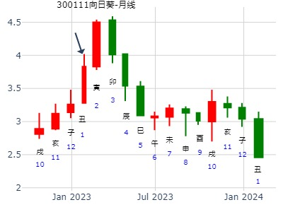

例145、
卯月辛丑日，又占，得恒之大过。
妻财戌土″应
官鬼申金″ 动 官鬼酉金
子孙午火′
官鬼酉金′世
父母亥水′
妻财丑土″
余曰：恭喜，此地爵位虽已失，速速援例，再任西方。
彼曰：何以见得？
余曰：持世官星破而入墓，所以知其失就矣！幸五爻官化进神乃再任之官也。
〖子平凡思注〗世爻之官虽破，五爻之官化进，是此处失彼处得。
王注： 申化酉，此处酉不当月破，而当进神论。
巳月丁卯日，占何日雨？得雷风恒之泽风大过。
妻财戌土″应
官鬼申金″ 动 官鬼酉金
子孙午火′
官鬼酉金′世
父母亥水′
妻财丑土″
世爻酉鬼暗动，申鬼明动化进神，本日申时，霹雳惊天，远方大雨，而本处洒来几点。或曰：想因父爻月破。
予曰：非也，父爻若动，虽临月破，亦作大雨。
测天气，月破之爻若是发动 ，亦作大雨。
主帖标题: 有回调需求
事：测上证大盘近期走势
出生时间：年 性别：男 起卦方式：电脑自动
起卦时间：2012年01月06日00时03分
干支：辛卯年庚子月丙寅日戊子时
旬空：午未 辰巳 戌亥 午未
六神 伏神 震宫：雷风恒 震宫：泽风大过（游魂）
【本 卦】 【变 卦】
青龙 ▅▅ ▅▅ 妻财庚戌土 应 ▅▅ ▅▅ 妻财丁未土
玄武 ▅▅ ▅▅ 官鬼庚申金 ×→ ▅▅▅▅▅ 官鬼丁酉金
白虎 ▅▅▅▅▅ 子孙庚午火 ▅▅▅▅▅ 父母丁亥水 世
滕蛇 ▅▅▅▅▅ 官鬼辛酉金 世 ▅▅▅▅▅ 官鬼辛酉金
勾陈 兄弟庚寅木 ▅▅▅▅▅ 父母辛亥水 ▅▅▅▅▅ 父母辛亥水
朱雀 ▅▅ ▅▅ 妻财辛丑土 ▅▅ ▅▅ 妻财辛丑土 应
结合技术走势，有回调要求，请大家注意！周四我已卖了大部分
向日葵123月。恒之大过。金玉堂。
时间: 2023-01-16 12时50分
干支: 壬寅年癸丑月甲戌日 (旬空: 申酉 )
雷风恒 泽风大过(游魂)
六神 伏神 本 卦 变 卦
玄武 ▅▅ ▅▅ 妻财戌土 应 ▅▅ ▅▅ 妻财未土
白虎 ▅▅ ▅▅ 官鬼申金 Ｘ→ ▅▅▅▅▅ 官鬼酉金
腾蛇 ▅▅▅▅▅ 子孙午火 ▅▅▅▅▅ 父母亥水 世
勾陈 ▅▅▅▅▅ 官鬼酉金 世 ▅▅▅▅▅ 官鬼酉金
朱雀 兄弟寅木▅▅▅▅▅ 父母亥水 ▅▅▅▅▅ 父母亥水
青龙 ▅▅ ▅▅ 妻财丑土 ▅▅ ▅▅ 妻财丑土 应
六五：恆其德，贞，妇人吉，夫子凶。

短线操作，快进快出，在推荐一股：山东威达002026
出生年：1987年 性别：男 占事: 在推荐一股：山东威达002026
起卦方式：手动摇卦 周易天地www.64gua.com六爻线上排盘系统
公历时间：2009年2月11日20时45分
干支：己丑年 丙寅月 丁亥日 庚戌时 旬空：午未 戌亥 午未 寅卯
震宫：雷风恒 震宫：泽风大过（游魂）
青龙 ▄▄ ▄▄ 妻财庚戌土 应 ▄▄ ▄▄ 妻财丁未土
玄武 ▄▄ ▄▄ 官鬼庚申金 X-> ▄▄▄▄▄ 官鬼丁酉金
白虎 ▄▄▄▄▄ 子孙庚午火 ▄▄▄▄▄ 父母丁亥水 世
螣蛇 ▄▄▄▄▄ 官鬼辛酉金 世 ▄▄▄▄▄ 官鬼辛酉金
勾陈兄弟庚寅木 ▄▄▄▄▄ 父母辛亥水 ▄▄▄▄▄ 父母辛亥水
朱雀 ▄▄ ▄▄ 妻财辛丑土 ▄▄ ▄▄ 妻财辛丑土 应
测五粮液未来几年价格趋势 李炎
公历起卦时间：2017年2月26日12时59分 (手工指定)
干支：丁酉年壬寅月甲申日庚午时 （日空：午未）
震宫：雷风恒 震宫：泽风大过 (游魂)
玄武 妻财庚戌土 ▅▅ ▅▅ 应 妻财丁未土 ▅▅ ▅▅
白虎 官鬼庚申金 ▅▅ ▅▅ ╳→ 官鬼丁酉金 ▅▅▅▅▅
腾蛇 子孙庚午火 ▅▅▅▅▅ 父母丁亥水 ▅▅▅▅▅ 世
勾陈 官鬼辛酉金 ▅▅▅▅▅ 世 官鬼辛酉金 ▅▅▅▅▅
朱雀 兄弟庚寅木 父母辛亥水 ▅▅▅▅▅ 父母辛亥水 ▅▅▅▅▅
青龙 妻财辛丑土 ▅▅ ▅▅ 妻财辛丑土 ▅▅ ▅▅ 应
试测紫光国微辛丑年寅卯辰月哪月顶？+
出生：2021 年 性别：男 占事：没填
公历起卦时间：2021年2月19日16时35分 (电脑自动)
干支：辛丑年 庚寅月 戊戌日 庚申时 （日空：辰巳）
震宫：雷风恒 震宫：泽风大过 (游魂)
六神 伏神 本 卦 变 卦
朱雀 妻财庚戌土 ▅▅ ▅▅ 应 妻财丁未土 ▅▅ ▅▅
青龙 官鬼庚申金 ▅▅ ▅▅ ╳→ 官鬼丁酉金 ▅▅▅▅▅
玄武 子孙庚午火 ▅▅▅▅▅ 父母丁亥水 ▅▅▅▅▅ 世
白虎 官鬼辛酉金 ▅▅▅▅▅ 世 官鬼辛酉金 ▅▅▅▅▅
螣蛇 兄弟庚寅木 父母辛亥水 ▅▅▅▅▅ 父母辛亥水 ▅▅▅▅▅
勾陈 妻财辛丑土 ▅▅ ▅▅ 妻财辛丑土 ▅▅ ▅▅ 应
主帖标题: 2月22至2月26日大盘（日测）
明天周五涨跌
公历时间：2021年2月25日15时47分
干 支：辛丑年 庚寅月 甲辰日 壬申时
旬 空：辰巳 午未 寅卯 戌亥
震宫：雷风恒 震宫：泽风大过（游魂）
玄武 ▄▄ ▄▄ 妻财庚戌土 应 ▄▄ ▄▄ 妻财丁未土
白虎 ▄▄ ▄▄ 官鬼庚申金 × ▄▄▄▄▄ 官鬼丁酉金
螣蛇 ▄▄▄▄▄ 子孙庚午火 ▄▄▄▄▄ 父母丁亥水 世
勾陈 ▄▄▄▄▄ 官鬼辛酉金 世 ▄▄▄▄▄ 官鬼辛酉金
朱雀 兄弟庚寅木 ▄▄▄▄▄ 父母辛亥水 ▄▄▄▄▄ 父母辛亥水
青龙 ▄▄ ▄▄ 妻财辛丑土 ▄▄ ▄▄ 妻财辛丑土 应

以下是引用111-111在2008-3-9 20:13:00的发言：...我买的可是600635创投类股票这个同类力合股份我起过一卦，不容乐观
占事: 000532一周走势25.06元起
起卦方式：手工指定 周易天地线上排盘系统
公历时间：2008年3月9日14时50分
干支：戊子年 乙卯月 戊申日 己未时 旬空：午未 子丑 寅卯 子丑
震宫：雷风恒 震宫：泽风大过（游魂）
六神 伏 神 【本 卦】 【变 卦】
朱雀 ▄▄ ▄▄ 妻财庚戌土 应 ▄▄ ▄▄ 妻财丁未土 青龙 ▄▄ ▄▄ 官鬼庚申金 X-> ▄▄▄▄▄ 官鬼丁酉金 玄武 ▄▄▄▄▄ 子孙庚午火 ▄▄▄▄▄ 父母丁亥水 世白虎 ▄▄▄▄▄ 官鬼辛酉金 世 ▄▄▄▄▄ 官鬼辛酉金 螣蛇 兄弟庚寅木 ▄▄▄▄▄ 父母辛亥水 ▄▄▄▄▄ 父母辛亥水 勾陈 ▄▄ ▄▄ 妻财辛丑土 ▄▄ ▄▄ 妻财辛丑土 应
主帖标题: 601898走势？
性别：女 占事: 2008.03.24-28日601898？
起卦方式：报数起卦 (68,37) 动爻加时辰
公历时间：2008年3月24日13时32分
干支：戊子年乙卯月癸亥日己未时 旬空：午未 子丑 子丑 子丑
震宫：雷风恒 震宫：泽风大过（游魂）
白虎 ▄▄ ▄▄ 妻财庚戌土 应 ▄▄ ▄▄ 妻财丁未土
螣蛇 ▄▄ ▄▄ 官鬼庚申金 X-> ▄▄▄▄▄ 官鬼丁酉金
勾陈 ▄▄▄▄▄ 子孙庚午火 ▄▄▄▄▄ 父母丁亥水 世
朱雀 ▄▄▄▄▄ 官鬼辛酉金 世 ▄▄▄▄▄ 官鬼辛酉金
青龙 兄弟庚寅木 ▄▄▄▄▄ 父母辛亥水 ▄▄▄▄▄ 父母辛亥水
玄武 ▄▄ ▄▄ 妻财辛丑土 ▄▄ ▄▄ 妻财辛丑土 应

3月12日大盘。恒之大过。.md
起卦时间：2015年3月11日14时10分 (报双数起卦-动爻加时辰)风生水起报数4，5
干支：乙未年 己卯月 丙戌日 乙未时 （日空：午未）
震宫：雷风恒 震宫：泽风大过 (游魂)
六神 伏神 本 卦 变 卦
青龙 妻财庚戌土 ▅▅ ▅▅ 应 妻财丁未土 ▅▅ ▅▅
玄武 官鬼庚申金 ▅▅ ▅▅ ╳→ 官鬼丁酉金 ▅▅▅▅▅
白虎 子孙庚午火 ▅▅▅▅▅ 父母丁亥水 ▅▅▅▅▅ 世
腾蛇 官鬼辛酉金 ▅▅▅▅▅ 世 官鬼辛酉金 ▅▅▅▅▅
勾陈 兄弟庚寅木 父母辛亥水 ▅▅▅▅▅ 父母辛亥水 ▅▅▅▅▅
朱雀 妻财辛丑土 ▅▅ ▅▅ 妻财辛丑土 ▅▅ ▅▅ 应
主帖标题: 4.15 上证50
公历起卦时间：2022年4月14日15时33分 (按农历时间起卦)
干支：壬寅年 甲辰月 丁酉日 戊申时 （日空：辰巳）
震宫：雷风恒 震宫：泽风大过 (游魂)
六神 伏神 本 卦 变 卦
青龙 妻财庚戌土 ▅▅ ▅▅ 应 妻财丁未土 ▅▅ ▅▅
玄武 官鬼庚申金 ▅▅ ▅▅ ╳→ 官鬼丁酉金 ▅▅▅▅▅
白虎 子孙庚午火 ▅▅▅▅▅ 父母丁亥水 ▅▅▅▅▅ 世
螣蛇 官鬼辛酉金 ▅▅▅▅▅ 世 官鬼辛酉金 ▅▅▅▅▅
勾陈 兄弟庚寅木 父母辛亥水 ▅▅▅▅▅ 父母辛亥水 ▅▅▅▅▅
朱雀 妻财辛丑土 ▅▅ ▅▅ 妻财辛丑土 ▅▅ ▅▅ 应
上证50看空。
主帖标题: [原创]恒生指数探讨七
起卦方式：时间起卦 www.iqing.net线上排盘系统
公历时间：2006年5月30日15时36分 星期二
干支：丙戌年 癸巳月 己未日 壬申时 (旬空：子丑)
震宫：雷风恒 震宫：泽风大过（游魂）
勾陈 ▅▅ ▅▅ 妻财庚戌土 应 ▅▅ ▅▅ 妻财丁未土
朱雀 ▅▅ ▅▅ 官鬼庚申金 ×→ ▅▅▅▅▅ 官鬼丁酉金
青龙 ▅▅▅▅▅ 子孙庚午火 ▅▅▅▅▅ 父母丁亥水 世
玄武 ▅▅▅▅▅ 官鬼辛酉金 世 ▅▅▅▅▅ 官鬼辛酉金
白虎 兄弟庚寅木 ▅▅▅▅▅ 父母辛亥水 ▅▅▅▅▅ 父母辛亥水
螣蛇 ▅▅ ▅▅ 妻财辛丑土 ▅▅ ▅▅ 妻财辛丑土 应
主帖标题: 20160516一周行情 时间起卦(起卦方式)
占问事宜：20160516至20曰上证？
公历：2016年5月13日15时15分，星期五。
干支：丙申年 癸巳月 乙未日 甲申时 (卦身：申)
主变卦 雷风恒(震宫) 之 泽风大过(震宫) [空亡:辰、巳]
玄武 ▅▅ ▅▅ 妻财庚戌土 应 ▅▅ ▅▅ 妻财丁未土
白虎 ▅▅ ▅▅×官鬼庚申金 ▅▅▅▅▅ 官鬼丁酉金
螣蛇 ▅▅▅▅▅ 子孙庚午火 ▅▅▅▅▅ 父母丁亥水 世
勾陈 ▅▅▅▅▅ 官鬼辛酉金 世 ▅▅▅▅▅ 官鬼辛酉金
朱雀 兄弟庚寅木 ▅▅▅▅▅ 父母辛亥水 ▅▅▅▅▅ 父母辛亥水
青龙 ▅▅ ▅▅ 妻财辛丑土 ▅▅ ▅▅ 妻财辛丑土 应
主帖标题: [讨论]恒生指数探讨十一
出生年：年 性别：男 占事：
起卦方式：时间起卦
公历时间：2006年6月7日0时53分 星期三
干支：丙戌年 甲午月 丁卯日 庚子时 (旬空：戌亥)
震宫：雷风恒 震宫：泽风大过（游魂）
青龙 ▅▅ ▅▅ 妻财庚戌土 应 ▅▅ ▅▅ 妻财丁未土
玄武 ▅▅ ▅▅ 官鬼庚申金 ×→ ▅▅▅▅▅ 官鬼丁酉金
白虎 ▅▅▅▅▅ 子孙庚午火 ▅▅▅▅▅ 父母丁亥水 世
螣蛇 ▅▅▅▅▅ 官鬼辛酉金 世 ▅▅▅▅▅ 官鬼辛酉金
勾陈 兄弟庚寅木 ▅▅▅▅▅ 父母辛亥水 ▅▅▅▅▅ 父母辛亥水
朱雀 ▅▅ ▅▅ 妻财辛丑土 ▅▅ ▅▅ 妻财辛丑土 应
官暗动，为卦官亦动而逢冲；应财化退；下跌无疑。
公历时间：2006年6月7日0时农历时间：五月十二日庚子时 芒种上元当月节气：6月21日21时18分夏至 当日干支：丙戌 甲午 丁卯 庚子国际易经网 www.iqing.net线上排盘系统当日旬空：戌亥（日） 辰巳（时）阳遁六局 值符天英落八宫 值使景门落六宫┌──────┬──────┬──────┐│ 太阴 │ 六合 │ 白虎 ││ 休门 己│ 生门 戊│ 伤门 壬││ 天柱 丙│ 天心 辛│ 天蓬 癸│├──────┼──────┼──────┤│ 螣蛇 │ │ 玄武 ││乙 开门 癸│ │ 杜门 庚││禽 天芮 丁│ 乙│ 天任 己│├──────┼──────┼──────┤│ 值符 │ 九天 │ 九地 ││ 惊门 辛│ 死门 丙│ 景门 丁││ 天英 庚│ 天辅 壬│ 天冲 戊│└──────┴──────┴──────┘
生门临资金见辛，一目了然，下跌无疑。
公历：2006年6月7日0时节气：6月21日21时18分夏至干支：丙戌 甲午 丁卯 庚子 旬空：甲子旬戌亥空 月将：五月申将 勾 青 空 虎 丑 寅 卯 辰 合子 巳常 朱亥 午玄 戌 酉 申 未 蛇 贵 后 阴 阴 朱 朱 空 未 亥 亥 卯 亥 卯 卯 丁 子 辛未 阴 ⊙ 父 丁卯 空 官 亥 朱 ◎
三合父母局面；仍旧被拖累的情况，末又见鬼空；下跌明显，而且父母主受言论，信息，舆论的影响下跌可能性有之。
上海家化630二周卦。恒之大过。风生水起。
时间: 2022-06-30 12时49分
干支: 壬寅年丙午月甲寅日 (旬空: 子丑 )
雷风恒 泽风大过(游魂)
六神 伏神 本 卦 变 卦
玄武 ▅▅ ▅▅ 妻财戌土 应 ▅▅ ▅▅ 妻财未土
白虎 ▅▅ ▅▅ 官鬼申金 Ｘ→ ▅▅▅▅▅ 官鬼酉金
腾蛇 ▅▅▅▅▅ 子孙午火 ▅▅▅▅▅ 父母亥水 世
勾陈 ▅▅▅▅▅ 官鬼酉金 世 ▅▅▅▅▅ 官鬼酉金
朱雀 兄弟寅木▅▅▅▅▅ 父母亥水 ▅▅▅▅▅ 父母亥水
青龙 ▅▅ ▅▅ 妻财丑土 ▅▅ ▅▅ 妻财丑土 应
占事：7月1日期指1507的走势
方式：手工指定
公历：2015年7月1日9时7分 星期三 北京时间
干支：乙未年 壬午月 戊寅日 丁巳时
旬空：辰巳 申酉 申酉 子丑
震：雷风恒 震：泽风大过(游魂)
朱雀 ▅▅ ▅▅ 妻财庚戌土 应 ▅▅ ▅▅ 妻财丁未土
青龙 ▅▅ ▅▅ 官鬼庚申金 ×→ ▅▅▅▅▅ 官鬼丁酉金
玄武 ▅▅▅▅▅ 子孙庚午火 ▅▅▅▅▅ 父母丁亥水 世
白虎 ▅▅▅▅▅ 官鬼辛酉金 世 ▅▅▅▅▅ 官鬼辛酉金
螣蛇 兄弟庚寅木 ▅▅▅▅▅ 父母辛亥水 ▅▅▅▅▅ 父母辛亥水
勾陈 ▅▅ ▅▅ 妻财辛丑土 ▅▅ ▅▅ 妻财辛丑土 应

主帖标题: [原创]每日预测深沪两市大盘方向
公历时间：2008年8月8日9时30分 星期五
干支：戊子年庚申月庚辰日辛巳时 (旬空：申酉)
雷风恒 泽风大过(游魂)
六神 伏神 本 卦 变 卦
腾蛇 ▅▅ ▅▅ 妻财戌土 应 ▅▅ ▅▅ 妻财未土
勾陈 ▅▅ ▅▅ 官鬼申金 Ｘ→ ▅▅▅▅▅ 官鬼酉金
朱雀 ▅▅▅▅▅ 子孙午火 ▅▅▅▅▅ 父母亥水 世
青龙 ▅▅▅▅▅ 官鬼酉金 世 ▅▅▅▅▅ 官鬼酉金
玄武 兄弟寅木▅▅▅▅▅ 父母亥水 ▅▅▅▅▅ 父母亥水
白虎 ▅▅ ▅▅ 妻财丑土 ▅▅ ▅▅ 妻财丑土 应
主帖标题: 9月4日对自己的股票操作指南。
以下是引用均锋在2007-9-4 6:56:00的发言：
主题：我今天的财运如何？丁亥 戊申 辛丑 庚寅 (辰巳空) 丁亥年七月廿三(2007/09/04 03:54:27)
雷风恒 泽风大过
腾蛇 妻财戌土 ∥ 应 妻财未土 ∥
勾陈 官鬼申金 × 官鬼酉金 ／
朱雀 子孙午火 ／ 父母亥水 ／ 世
青龙 官鬼酉金 ／ 世 官鬼酉金 ／ 兄弟寅木：
玄武 父母亥水 ／ 父母亥水 ／
白虎 妻财丑土 ∥ 妻财丑土 ∥ 应
看了很久，总象是这个卦的动乂符号有错，得出了有雷，有风，有泽，有水----听天由命了均版看问题的方法很诡异噢 等钱版晚上的回贴
注：勉强以大盘代表。
求测人：某人，男，乙卯(1975年)，自动起卦(起卦方式)
占问事宜：603843正平股份明天涨跌
公历：2016年9月26日17时25分，星期一。
干支：丙申年 丁酉月 辛亥日 丁酉时 (卦身：申)
主变卦 雷风恒(震宫) 之 泽风大过(震宫) [空亡:寅、卯]
螣蛇 ▅▅ ▅▅ 妻财庚戌土 应 ▅▅ ▅▅ 妻财丁未土
勾陈 ▅▅ ▅▅×官鬼庚申金 ▅▅▅▅▅ 官鬼丁酉金
朱雀 ▅▅▅▅▅ 子孙庚午火 ▅▅▅▅▅ 父母丁亥水 世
青龙 ▅▅▅▅▅ 官鬼辛酉金 世 ▅▅▅▅▅ 官鬼辛酉金
玄武 兄弟庚寅木 ▅▅▅▅▅ 父母辛亥水 ▅▅▅▅▅ 父母辛亥水
白虎 ▅▅ ▅▅ 妻财辛丑土 ▅▅ ▅▅ 妻财辛丑土 应
主帖标题: 2014年股票实战.总卦贴
1、占问事宜：买进000572海马汽车可获利否
公历：2014年10月4日17时52分，星期六。
干支：甲午年癸酉月戊申日辛酉时 (卦身：申)
主变卦 雷风恒(震宫) 之 泽风大过(震宫) [空亡:寅、卯]
朱雀 ▅▅ ▅▅ 妻财庚戌土 应 ▅▅ ▅▅ 妻财丁未土
青龙 ▅▅ ▅▅×官鬼庚申金 ▅▅▅▅▅ 官鬼丁酉金
玄武 ▅▅▅▅▅ 子孙庚午火 ▅▅▅▅▅ 父母丁亥水 世
白虎 ▅▅▅▅▅ 官鬼辛酉金 世 ▅▅▅▅▅ 官鬼辛酉金
螣蛇 兄弟庚寅木 ▅▅▅▅▅ 父母辛亥水 ▅▅▅▅▅ 父母辛亥水
勾陈 ▅▅ ▅▅ 妻财辛丑土 ▅▅ ▅▅ 妻财辛丑土 应
2、占问事宜：买进中北集团000759可赚钱否？
公历：2014年10月9日14时27分，星期四。
干支：甲午年 甲戌月 癸丑日 己未时 (卦身：申)
主变卦 山泽损(艮宫) 之 山水蒙(离宫) [空亡:寅、卯]
白虎 ▅▅▅▅▅ 官鬼丙寅木 应 ▅▅▅▅▅ 官鬼丙寅木
螣蛇 ▅▅ ▅▅ 妻财丙子水 ▅▅ ▅▅ 妻财丙子水
勾陈 ▅▅ ▅▅ 兄弟丙戌土 ▅▅ ▅▅ 兄弟丙戌土 世
朱雀 子孙丙申金 ▅▅ ▅▅ 兄弟丁丑土 世 ▅▅ ▅▅ 父母戊午火
青龙 ▅▅▅▅▅ 官鬼丁卯木 ▅▅▅▅▅ 兄弟戊辰土
玄武 ▅▅▅▅▅○父母丁巳火 ▅▅ ▅▅ 官鬼戊寅木 应
两个卦，买哪个好？很纠结啊。中北近期应该不错哈。
主帖标题: 明天买002297获利么？
公历起卦时间：2013年11月26日22时17分 (报单数起卦-动爻加时辰)
干支：癸巳年 癸亥月 丙申日 己亥时 （日空：辰巳）
神煞：驿马－寅 桃花－酉 日禄－巳 贵人－酉，亥
震宫：雷风恒 震宫：泽风大过 (游魂)
六神 伏神 本 卦 变 卦
青龙 妻财庚戌土 ▅▅ ▅▅ 应 妻财丁未土 ▅▅ ▅▅
玄武 官鬼庚申金 ▅▅ ▅▅ ╳→ 官鬼丁酉金 ▅▅▅▅▅
白虎 子孙庚午火 ▅▅▅▅▅ 父母丁亥水 ▅▅▅▅▅ 世
腾蛇 官鬼辛酉金 ▅▅▅▅▅ 世 官鬼辛酉金 ▅▅▅▅▅
勾陈 兄弟庚寅木 父母辛亥水 ▅▅▅▅▅ 父母辛亥水 ▅▅▅▅▅
朱雀 妻财辛丑土 ▅▅ ▅▅ 妻财辛丑土 ▅▅ ▅▅ 应
主帖标题: 11月13日黄金的走势 1160
出生年：年 性别：男 占事: 黄金现价1160预测黄金今日走势
起卦方式：手工指定 周易天地www.64gua.com六爻线上排盘系统
公历时间：2014年11月13日8时51分
干支：甲午年 乙亥月 戊子日 丙辰时
旬空：辰巳 申酉 午未 子丑
震宫：雷风恒 震宫：泽风大过（游魂）
朱雀 ▄▄ ▄▄ 妻财庚戌土 应 ▄▄ ▄▄ 妻财丁未土
青龙 ▄▄ ▄▄ 官鬼庚申金 X-> ▄▄▄▄▄ 官鬼丁酉金
玄武 ▄▄▄▄▄ 子孙庚午火 ▄▄▄▄▄ 父母丁亥水 世
白虎 ▄▄▄▄▄ 官鬼辛酉金 世 ▄▄▄▄▄ 官鬼辛酉金
螣蛇 兄弟庚寅木 ▄▄▄▄▄ 父母辛亥水 ▄▄▄▄▄ 父母辛亥水
勾陈 ▄▄ ▄▄ 妻财辛丑土 ▄▄ ▄▄ 妻财辛丑土 应
现在现货黄金/美元在1079左右，是不是阶段底部？
若是，期货黄金1512在222.5的位置是否适合买入？
起一个时间卦看看
公历：2015年11月21日0时4分，星期六。
干支：乙未年 丁亥月 辛丑日 戊子时 (卦身：申)
主变卦 雷风恒(震宫) 之 泽风大过(震宫) [空亡:辰、巳]
螣蛇 ▅▅ ▅▅ 妻财庚戌土 应 ▅▅ ▅▅ 妻财丁未土
勾陈 ▅▅ ▅▅×官鬼庚申金 ▅▅▅▅▅ 官鬼丁酉金
朱雀 ▅▅▅▅▅ 子孙庚午火 ▅▅▅▅▅ 父母丁亥水 世
青龙 ▅▅▅▅▅ 官鬼辛酉金 世 ▅▅▅▅▅ 官鬼辛酉金
玄武 兄弟庚寅木 ▅▅▅▅▅ 父母辛亥水 ▅▅▅▅▅ 父母辛亥水
白虎 ▅▅ ▅▅ 妻财辛丑土 ▅▅ ▅▅ 妻财辛丑土 应
求测人：某人，男，乙卯(1975年)，自动起卦(起卦方式)
占问事宜：300411金盾股份明天涨跌
公历：2016年11月10日16时26分，星期四。
干支：丙申年 己亥月 丙申日 丙申时 (卦身：申)
主变卦 雷风恒(震宫) 之 泽风大过(震宫) [空亡:辰、巳]
青龙 ▅▅ ▅▅ 妻财庚戌土 应 ▅▅ ▅▅ 妻财丁未土
玄武 ▅▅ ▅▅×官鬼庚申金 ▅▅▅▅▅ 官鬼丁酉金
白虎 ▅▅▅▅▅ 子孙庚午火 ▅▅▅▅▅ 父母丁亥水 世
螣蛇 ▅▅▅▅▅ 官鬼辛酉金 世 ▅▅▅▅▅ 官鬼辛酉金
勾陈 兄弟庚寅木 ▅▅▅▅▅ 父母辛亥水 ▅▅▅▅▅ 父母辛亥水
朱雀 ▅▅ ▅▅ 妻财辛丑土 ▅▅ ▅▅ 妻财辛丑土 应
恒之大过，官鬼值日（不值月）化进。大跌。
公历起卦时间：2009年12月17日15时24分 (手工指定)
干支：己丑年 丙子月 丙申日 丙申时 （日空：辰巳）
震宫：雷风恒 震宫：泽风大过 (游魂)
六神 伏神 本 卦 变 卦
青龙 妻财庚戌土 ▅▅ ▅▅ 应 妻财丁未土 ▅▅ ▅▅
玄武 官鬼庚申金 ▅▅ ▅▅ ╳→ 官鬼丁酉金 ▅▅▅▅▅
白虎 子孙庚午火 ▅▅▅▅▅ 父母丁亥水 ▅▅▅▅▅ 世
腾蛇 官鬼辛酉金 ▅▅▅▅▅ 世 官鬼辛酉金 ▅▅▅▅▅
勾陈 兄弟庚寅木 父母辛亥水 ▅▅▅▅▅ 父母辛亥水 ▅▅▅▅▅
朱雀 妻财辛丑土 ▅▅ ▅▅ 妻财辛丑土 ▅▅ ▅▅ 应
六五：恒其德，贞，妇人吉，夫子凶。象曰：妇人贞吉，从一而终也。 夫子制义，从妇凶也。
主帖标题: 留档：某股日内升降
公历起卦时间：2021年12月17日9时6分 (手工指定)
干支：辛丑年 庚子月 己亥日 己巳时 （日空：辰巳）
神煞：驿马－巳 桃花－子 日禄－午 贵人－子，申
震宫：雷风恒 震宫：泽风大过 (游魂)
六神 伏神 本 卦 变 卦
勾陈 妻财庚戌土 ▅▅ ▅▅ 应 妻财丁未土 ▅▅ ▅▅
朱雀 官鬼庚申金 ▅▅ ▅▅ ╳→ 官鬼丁酉金 ▅▅▅▅▅
青龙 子孙庚午火 ▅▅▅▅▅ 父母丁亥水 ▅▅▅▅▅ 世
玄武 官鬼辛酉金 ▅▅▅▅▅ 世 官鬼辛酉金 ▅▅▅▅▅
白虎 兄弟庚寅木 父母辛亥水 ▅▅▅▅▅ 父母辛亥水 ▅▅▅▅▅
螣蛇 妻财辛丑土 ▅▅ ▅▅ 妻财辛丑土 ▅▅ ▅▅ 应